| Unidade Curricular | Integração de Sistemas de Informação |
| Trabalho | Trabalho Prático I — processos ETL |
| Autor | {{AUTHOR_NAME}}, n.º 31525 |
| Docentes | Luís Ferreira, Óscar Ribeiro |
| Ano letivo | 2026/27 |
| Data | 22 de outubro de 2026 |
| Equipa | Trabalho individual: {{AUTHOR_NAME}} (n.º 31525) |
|---|---|
| Unidade Curricular | Integração de Sistemas de Informação (ISI), 2026/27 |
| Curso | Licenciatura em Engenharia de Sistemas Informáticos (LESI), EST — IPCA |
| Tema | Correlação de eventos de segurança física (controlo de acessos + sensores) com ETL, motor de regras e IA local |
| Plataforma ETL principal | Pentaho Data Integration (Kettle) 10.2.0.0-222 — Spoon, Pan e Kitchen |
| Ferramentas complementares | PostgreSQL 14; Python 3.12 + FastAPI; Ollama com o modelo qwen3:4b-instruct; Node-RED 5 + FlowFuse Dashboard 2.0; servidor SMTP (Office 365) |
| Ambiente | macOS (Apple M2, 8 GB RAM), todos os serviços locais (sem Docker) |
O trabalho enquadra-se no cenário de auditoria de segurança e de reação a eventos referido na motivação do enunciado. Numa organização, o controlo de acessos (leitores de cartão) e os sensores (movimento, portas) são normalmente sistemas distintos, de fabricantes diferentes, com formatos e qualidade de dados diferentes. Cada sistema, isolado, vê apenas uma parte do que aconteceu. O valor está em integrar e cruzar esses dados com a informação de referência (zonas, horários, utilizadores, permissões).
O processo foi desenvolvido para demonstrar as três fases obrigatórias (E, T e L) e os critérios de mais-valia do enunciado. Entre eles estão a diversidade de formatos (CSV, JSON, XML e YAML), as expressões regulares, os joins e lookups, a orquestração por Jobs, os logs, o acesso a serviços remotos (REST e e-mail), as operações sobre bases de dados e a visualização num dashboard.
Pretende-se demonstrar que um processo ETL consegue transformar registos dispersos e "sujos" de dois sistemas de segurança em casos de segurança com contexto, e que esses casos podem ser classificados de duas formas independentes e comparáveis:
Exemplos do tipo de situação que se quer detetar:
O problema também tem a dificuldade inversa: evitar falsos alarmes em situações legítimas. Por exemplo, um operador do turno da noite, uma ronda de segurança ou um cartão mal lido à primeira.
Os dados de origem têm problemas de qualidade propositados, que o ETL tem de resolver:
u-41, U012, user15);denied, Denied, DENIED);true, yes, 1, on);2026-13-45).Os registos inválidos não podem simplesmente desaparecer: têm de ficar registados com o motivo da rejeição.
Objetivos mensuráveis.
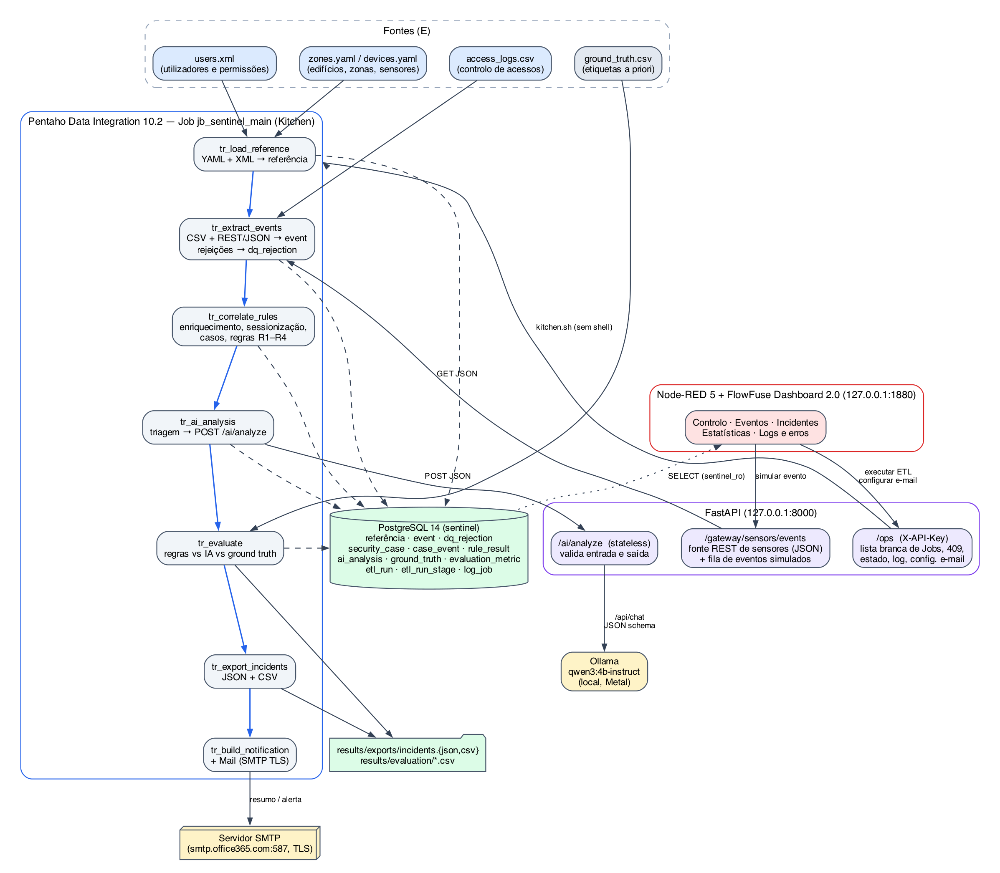
| Componente | Responsabilidade | Não faz |
|---|---|---|
| Pentaho (Kettle) | Toda a extração, transformação, correlação, regras, chamada à IA, avaliação, carregamento, exportação e notificação; Job de orquestração | Interface com o utilizador |
FastAPI /gateway | Simula o gateway IoT dos sensores (fonte REST/JSON) e recebe eventos simulados pelo dashboard | Transformar dados |
FastAPI /ai | Inferência: valida a entrada, chama o Ollama, valida a saída e devolve JSON (stateless) | Escrever na base de dados |
FastAPI /ops | Lança o Job (lista branca), controla a concorrência, expõe estado, etapas e log, e guarda a configuração de e-mail | Executar comandos arbitrários |
| Ollama + Qwen3 | Classificação contextual e explicação de um caso já correlacionado | Correlacionar ou integrar dados |
| PostgreSQL | Persistência dos dados, resultados, estado das execuções e logs (16 tabelas) | — |
| Node-RED + FlowFuse Dashboard 2.0 | Controlo e visualização low-code: executar o ETL, ver etapas, eventos, incidentes, estatísticas e erros | Qualquer transformação ETL |
Princípio seguido: os dados só são escritos pelo Pentaho. O dashboard lê a base de dados com um utilizador apenas de leitura (sentinel_ro) e só atua através da API. A IA não decide relações entre eventos: recebe um caso já construído pelo ETL e devolve uma interpretação.
| Fase | O que é feito |
|---|---|
| E — Recolha |
|
| T — Transformação |
|
| L — Persistência e exportação |
|
As 7 transformações somam 148 steps de 31 tipos diferentes; o Job tem 28 entradas de 9 tipos. Contagem extraída dos ficheiros .ktr:
| Categoria | Steps PDI (n.º de ocorrências) |
|---|---|
| Entrada | CSV file input (2), YAML input (2), Get data from XML (2), JSON input (2), REST client (2), Table input (8), Generate rows (1) |
| Limpeza / normalização | String operations (6), Replace in string com Regex (5), Value mapper (3), If field value is null (1), Calculator (6), Select values com metadados/conversão (22) |
| Validação / fluxo | User Defined Java Expression (23), Filter rows (3), Block until steps finish (4), tratamento de erros por step (error hops, 3) |
| Duplicados / ordenação | Unique rows (3), Unique rows (HashSet) (2), Sort rows (7) |
| Junção / cruzamento | Stream lookup (3), Database lookup (4), Merge join (2) |
| Agregação / cálculo | Group by (3), Modified JavaScript value (1), Get variables (8), Set variables (1) |
| Saída | Insert/Update (9), Table output (7), Execute SQL script (2), Text file output (3), JSON output (1) |
| Job | Start, Transformation (8), SQL (12), Check webservice availability, Add filenames to result, Mail (2), Write to log, Success, Abort |
Os dados são sintéticos e determinísticos (semente fixa), gerados por data/generator/generate_events.py para três dias (12 a 14 de outubro de 2026). Contêm tráfego normal e 15 cenários com etiqueta definida a priori: 7 suspeitos (S01–S07) e 8 benignos difíceis (B01–B08). A etiqueta é atribuída ao evento (ground_truth.csv, 152 eventos), não ao caso. Assim, a correlação não pode "escolher" a sua própria resposta certa. Um caso é suspeito se contiver algum evento de um cenário suspeito.
Para a avaliação ser justa:
case_id;.env ignorado pelo Git. O Pentaho recebe-as através de um KETTLE_HOME local ao projeto (kettle.properties gerado a partir do .env). Os .ktr e o .kjb só contêm variáveis como ${PG_PASSWORD} e ${SMTP_PASSWORD}.127.0.0.1./ops:
X-API-Key;run_id contra path traversal.Os diagramas desta secção foram gerados a partir do XML de cada .ktr, nas mesmas posições do canvas do Spoon. Cores por família de step: azul = entrada, verde = saída, amarelo = lookup/join, lilás = fluxo, ordenação e agregação, cinza = transformação de valores. Hops de erro a vermelho tracejado. Todas as transformações recebem o parâmetro RUN_ID do Job e usam a ligação parametrizada sentinel_pg.
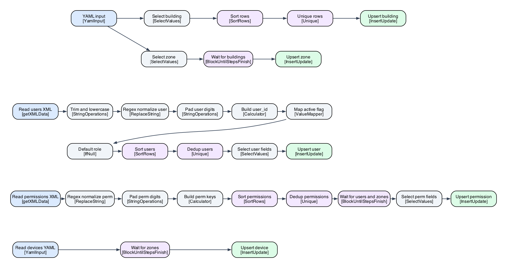
Objetivo. Carregar os dados mestre usados na correlação: 2 edifícios, 8 zonas (com nível de segurança e horário), 24 dispositivos, utilizadores e as respetivas permissões por zona.
Explicação. Há cinco ramos paralelos:
Date com a máscara HH:mm, para a comparação do Insert/Update funcionar na reexecução./users/user):
[^0-9] → "" mais padding e prefixo, para que u-7, U012 e user15 passem a U007, U012 e U015;^(\d): → 0$1:, para que 8:00 passe a 08:00;true/yes/1 → Y;unassigned;allowed_zones/zone é reestruturada numa linha por par utilizador×zona (XPath com ../../@id), e z3 passa a Z03.Os steps Block until steps finish garantem a ordem exigida pelas chaves estrangeiras (zonas depois de edifícios, permissões depois de utilizadores e zonas).
Resultado verificado. 2 edifícios, 8 zonas, 24 dispositivos, 15 utilizadores e 49 permissões. Na segunda execução o Insert/Update não insere nem atualiza nada (O=0, U=0), ou seja, a transformação é idempotente.
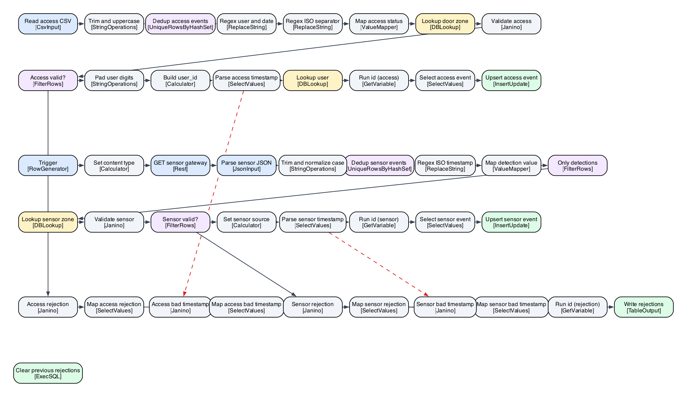
Objetivo. Integrar duas fontes heterogéneas numa tabela única event, com limpeza, validação e rastreabilidade das rejeições.
Ramo de acessos (CSV), por ordem:
^(\d{2})/(\d{2})/(\d{4}) → $3-$2-$1 e separador ISO T → espaço. Isto unifica três formatos de data.raw_user_ref.Date com tratamento de erros: uma data impossível segue pelo hop de erro.Ramo de sensores (API REST/JSON), por ordem:
$[*].campo).true/1/on → deteção. As leituras sem deteção são descartadas.Rejeições. Dois filtros de validação e dois hops de erro alimentam dq_rejection, com o registo original e o motivo:
MISSING_TIMESTAMP, MISSING_USER, UNKNOWN_DEVICE;INVALID_STATUS, INVALID_EVENT_TYPE, INVALID_TIMESTAMP.Um Execute SQL script limpa as rejeições anteriores do mesmo RUN_ID, para a reexecução não as duplicar.
| Lidos | Duplicados | Sem deteção | Rejeitados | Gravados | |
|---|---|---|---|---|---|
| Acessos (CSV) | 99 | 6 | — | 5 | 88 |
| Sensores (REST/JSON) | 79 | 4 | 9 | 2 | 64 |
Os 152 eventos gravados coincidem com o ground truth. Uma verificação independente em Python, evento a evento (data, zona, utilizador e tipo), deu 0 diferenças.
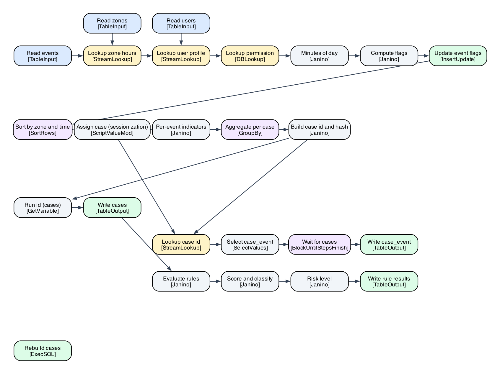
Enriquecimento. Cada evento passa por três lookups:
Depois, expressões Java calculam as flags do evento:
is_off_hours: zona fechada;is_outside_schedule: fora do turno do utilizador, incluindo turnos que atravessam a meia-noite;is_unauthorized_zone, is_unknown_user e is_inactive_user.As flags ficam gravadas em event.
Correlação (sessionização). Primeiro, Sort rows por zona e hora. Depois, um step Modified JavaScript com estado entre linhas abre um novo caso em três situações:
Os limites são configuráveis (${CORRELATION_GAP_MIN}, ${CORRELATION_MAX_SPAN_MIN}). O limite de duração evita associações em cadeia, que uma janela simples criaria.
O Group by agrega cada caso: início e fim, número de eventos, utilizadores distintos, contagens de recusas, presenças, eventos fora de horas e sem permissão, e a lista de IDs. Por fim, uma expressão cria:
case_id determinístico (CASE-<zona>-<aaaammdd-hhmmss>);events_hash (MD5 dos IDs), que serve de chave de cache da IA.A tabela case_event liga cada caso aos eventos de origem (rastreabilidade).
Motor de regras (abordagem A).
| Regra | Condição | Peso |
|---|---|---|
| R1 — Recusa seguida de presença | movimento ou abertura de porta depois de um acesso recusado no mesmo caso | 3 |
| R2 — Acesso fora de horas | pelo menos uma tentativa de acesso com a zona fechada | 1 |
| R3 — Recusas repetidas | 3 ou mais acessos recusados no caso | 3 |
| R4 — Atividade sem permissão | pelo menos um acesso concedido a uma zona sem permissão | 3 |
A pontuação é a soma dos pesos. O risco é CRITICAL com 6 ou mais, HIGH com 3 a 5, MEDIUM com 2, LOW com 1 e NONE com 0. Um caso é suspeito se a pontuação for pelo menos 1.
Resultado verificado.
case_event.case_id.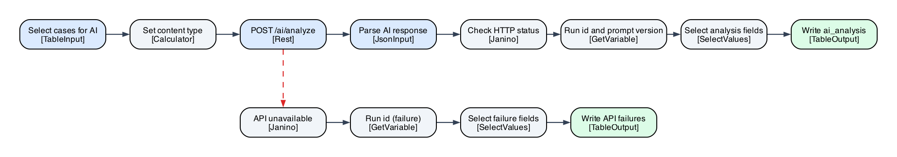
Explicação. Um Table input com SQL (etl/sql/ai_case_payloads.sql) faz três coisas:
events_hash) e versão do prompt (cache).json_agg). O payload leva zona, horário, eventos, utilizador, papel, turno, estado e permissão, mas nunca o veredicto das regras.Segue-se o REST client (POST ${API_URL}/ai/analyze) → JSON input → validação do estado HTTP → Table output para ai_analysis. Se a API estiver em baixo, um hop de erro grava API_UNAVAILABLE para cada caso, e nenhum caso se perde.
Serviço /ai/analyze (FastAPI → Ollama).
temperature=0, seed=42, num_ctx=4096 (limitado pelos 8 GB de RAM) e timeout de 150 s. O digest do modelo fica registado em cada análise.OK, TIMEOUT, INVALID_OUTPUT, INVALID_INPUT ou MODEL_ERROR). Assim o Pentaho trata as falhas como dados, sem interromper o fluxo.Resultado verificado.
API_UNAVAILABLE) e com uma rota inexistente (resultado MODEL_ERROR).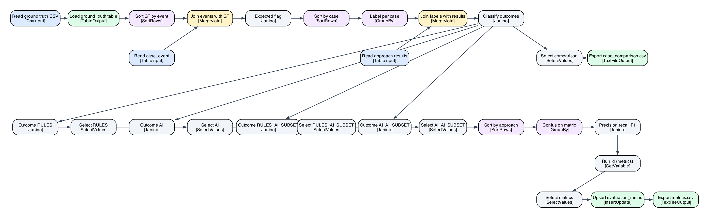
Explicação.
ground_truth.csv é carregado (CSV file input → Table output).COLLATE "C" no SQL, para coincidir com a do Kettle.Os resultados são gravados em evaluation_metric (Insert/Update) e exportados para metrics.csv e case_comparison.csv.
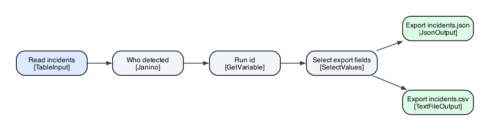
Exporta os incidentes, isto é, os casos suspeitos segundo as regras e/ou a IA, para incidents.json (JSON output) e incidents.csv (Text file output). Cada incidente leva:
BOTH, RULES_ONLY ou AI_ONLY);Na última execução foram exportados 13 incidentes.
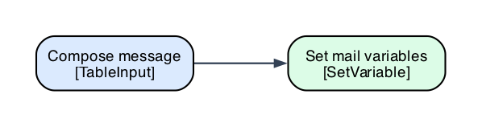
Segue o padrão do exemplo das aulas (EmailPrevisão.kjb, aula 06). Um Table input lê a base de dados e compõe uma única linha com o tipo de mensagem (resumo ou alerta), o assunto e o corpo em HTML. Um Set variables passa esses valores ao Job (MAIL_SUBJECT, MAIL_BODY), que os usa na entrada Mail.
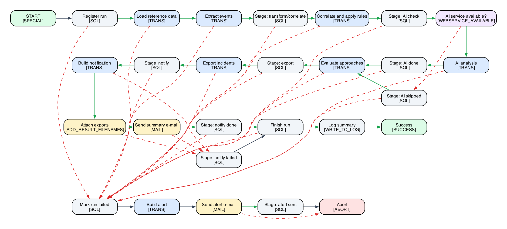
Explicação. O Job recebe dois parâmetros, RUN_ID e TRIGGER (cli ou dashboard), e executa as transformações por ordem. Entre elas, entradas SQL registam o início e o fim de cada etapa em etl_run_stage, com o número de linhas processadas:
Register run → tr_load_reference → tr_extract_events → tr_correlate_rules.${API_URL}/ai/health.
tr_ai_analysis.tr_evaluate → tr_export_incidents.tr_build_notification → Add filenames to result (anexa incidents.csv e metrics.csv) → Mail. Se o envio falhar, a etapa NOTIFY fica FAILED, mas a execução termina com sucesso, porque os dados já estão corretos.Finish run → Write to log → Success.Mark run failed (etapa e execução FAILED), depois para o alerta por e-mail e por fim para Abort. O Kitchen termina com código ≠ 0.etl_run / etl_run_stage: o estado funcional de cada execução e etapa (PENDING, RUNNING, SUCCEEDED, FAILED ou SKIPPED), com a duração, o número de linhas e as mensagens. O dashboard lê daqui.log_job: a tabela de log nativa do Kettle, configurada no Job.results/logs/<RUN_ID>.log: o log completo do Kitchen, consultável pela API (/ops/runs/{id}/log).| Cenário de execução testado | Resultado observado |
|---|---|
| Execução normal | exit 0; 7 etapas SUCCEEDED (EXTRACT 152, CORRELATE 82, RULES 11, AI, EVALUATE 4, EXPORT, NOTIFY) |
| Serviço de IA desligado | etapa AI = SKIPPED; o processo continua |
| Falha forçada numa transformação | etapa e execução FAILED; alerta enviado por e-mail; Abort; exit 1 |
| Servidor SMTP indisponível ou credenciais inválidas | NOTIFY = FAILED com o motivo; execução SUCCEEDED (exit 0); erro AuthenticationFailedException no log |
| Reexecução sem dados novos | sem duplicados (O=0, U=0); mesmos 82 casos; IA servida pela cache |
A entrada Mail está configurada como no exemplo da aula 06:
smtp.office365.com, porta 587;Servidor, conta, password, remetente e destinatários são variáveis. Vêm do .env ou do formulário do dashboard (secção 5.4). Numa execução lançada pelo dashboard (run-20261021-123044-e590), a etapa NOTIFY terminou com "Resumo enviado por e-mail … (SMTP smtp.office365.com:587)", ou seja, o servidor da Microsoft aceitou a mensagem. Quando a conta não está configurada ou a autenticação falha, a etapa NOTIFY aparece a vermelho no dashboard com o motivo, e as restantes etapas não são afetadas.
O botão Executar ETL do dashboard envia POST /ops/runs. A API regista a execução como PENDING e lança o Kitchen com o Job da lista branca. O dashboard mostra depois as etapas (lidas de etl_run_stage a cada 3 s) e as últimas linhas do log. O formulário de simulação envia um evento de sensor para a fila do gateway; esse evento é processado pelo Pentaho na execução seguinte, sem contornar o ETL.
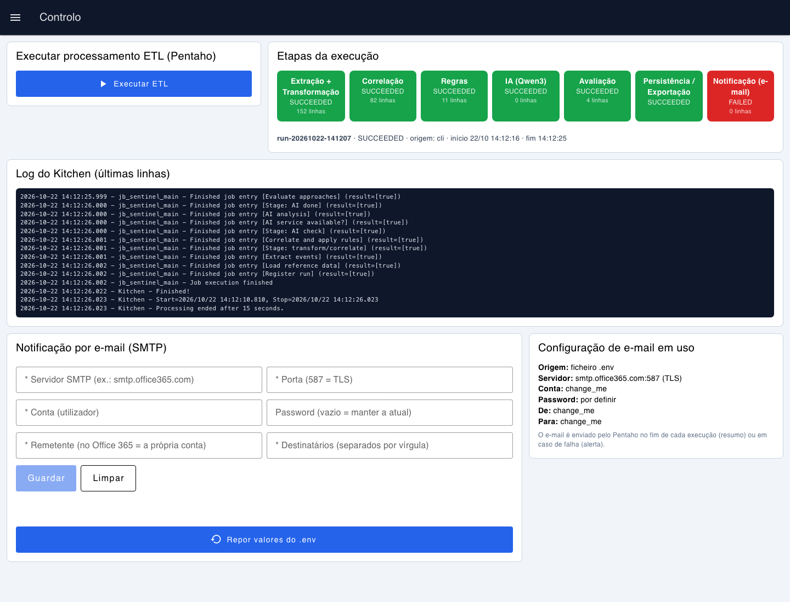
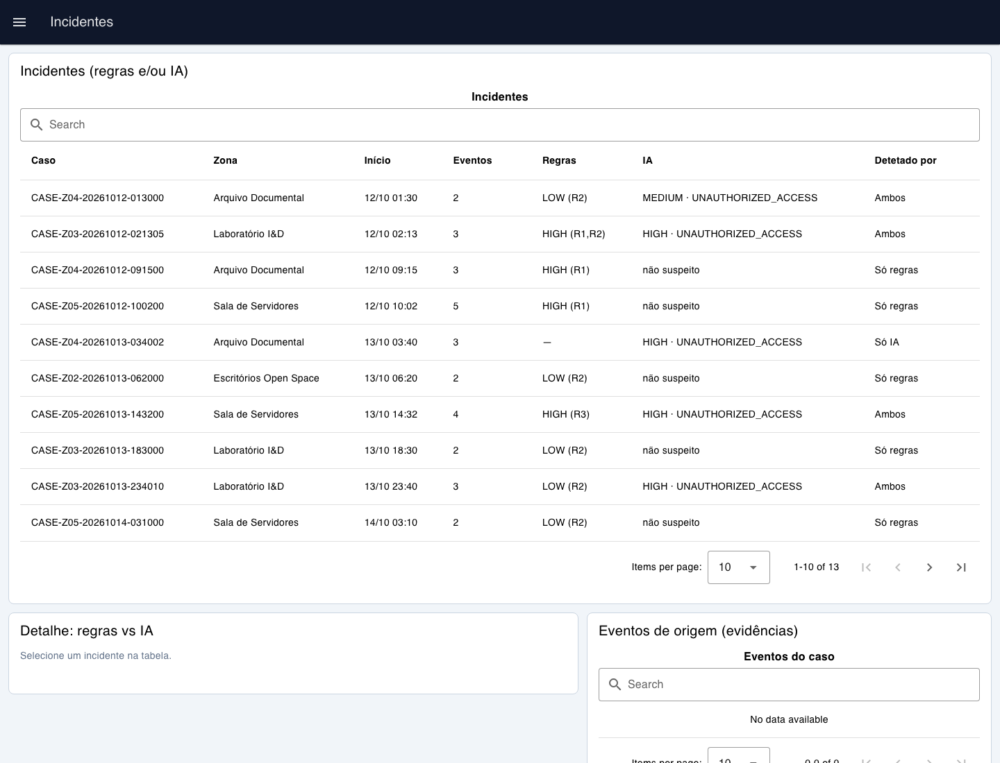
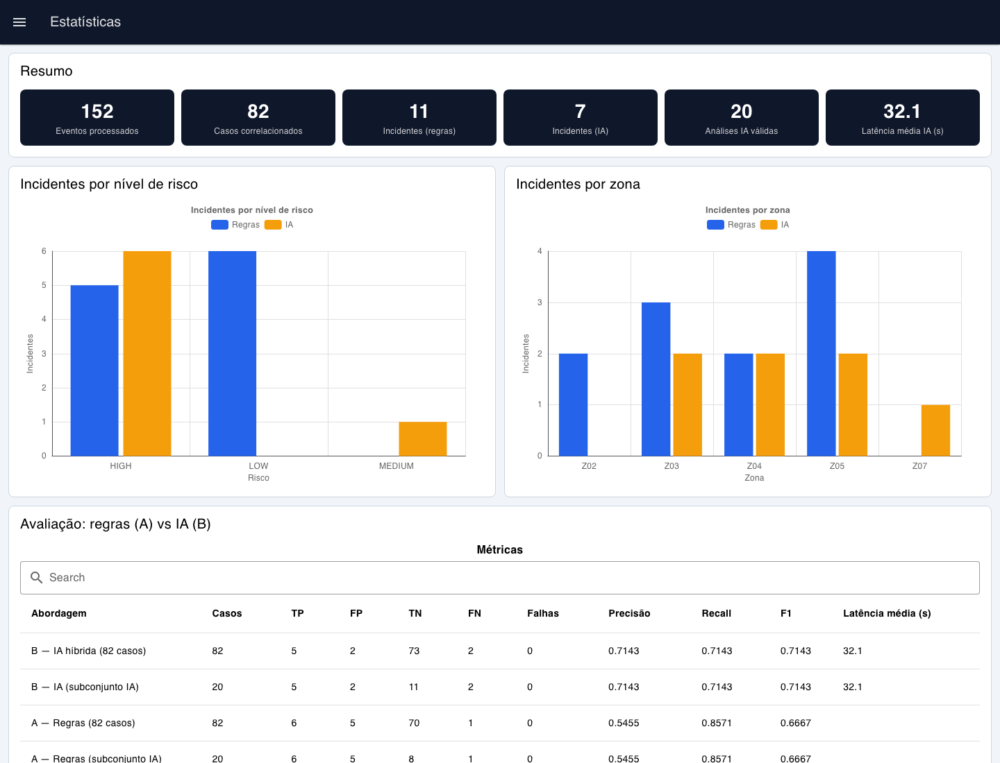
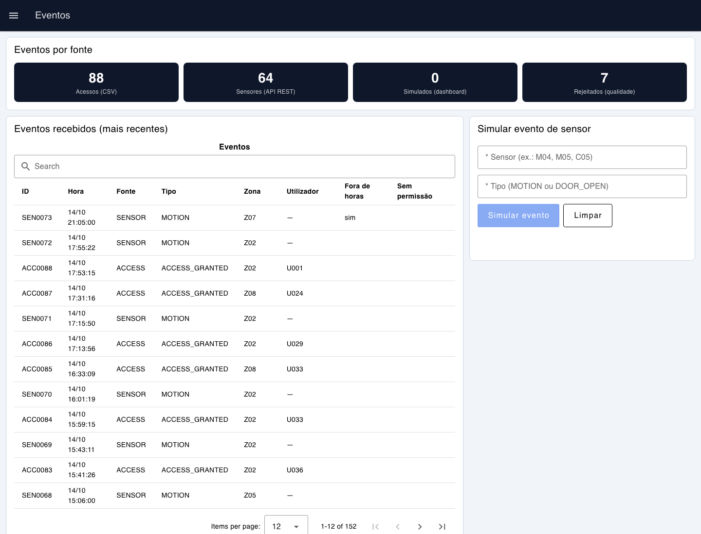
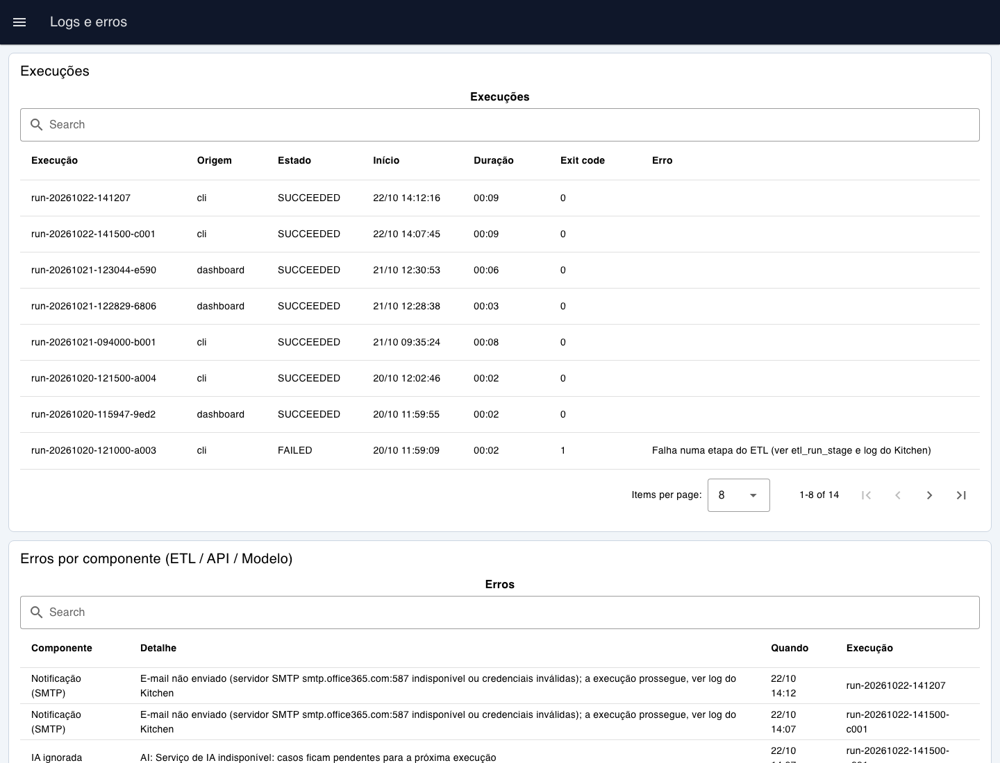
O vídeo demonstra:
Ligação: {{VIDEO_URL}}
| Abordagem | Casos | TP | FP | TN | FN | Precisão | Recall | F1 |
|---|---|---|---|---|---|---|---|---|
| A — Regras | 82 | 6 | 5 | 70 | 1 | 0,5455 | 0,8571 | 0,6667 |
| B — IA (triagem + Qwen3) | 82 | 5 | 2 | 73 | 2 | 0,7143 | 0,7143 | 0,7143 |
Fonte: results/evaluation/metrics.csv. Os falhanços da IA contam-se à parte (0 nesta execução).
Nenhuma das abordagens é melhor do que a outra em tudo:
As abordagens são complementares.
O trabalho cumpre as três fases ETL com o Pentaho como motor central:
PROMPT_VERSION).https://docs.hitachivantara.com/r/en-us/pentaho-data-integration-and-analyticshttps://www.postgresql.org/docs/14/https://fastapi.tiangolo.com/https://docs.pydantic.dev/https://github.com/ollama/ollama/blob/main/docs/api.mdqwen3:4b-instruct: https://ollama.com/library/qwen3https://nodered.org/docs/https://dashboard.flowfuse.com/https://flows.nodered.org/node/node-red-contrib-postgresqlhttps://graphviz.org/